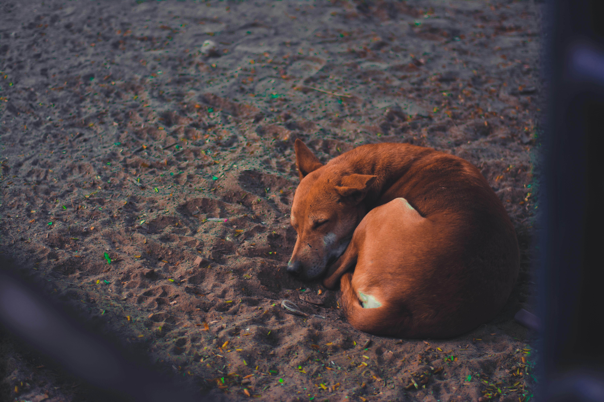
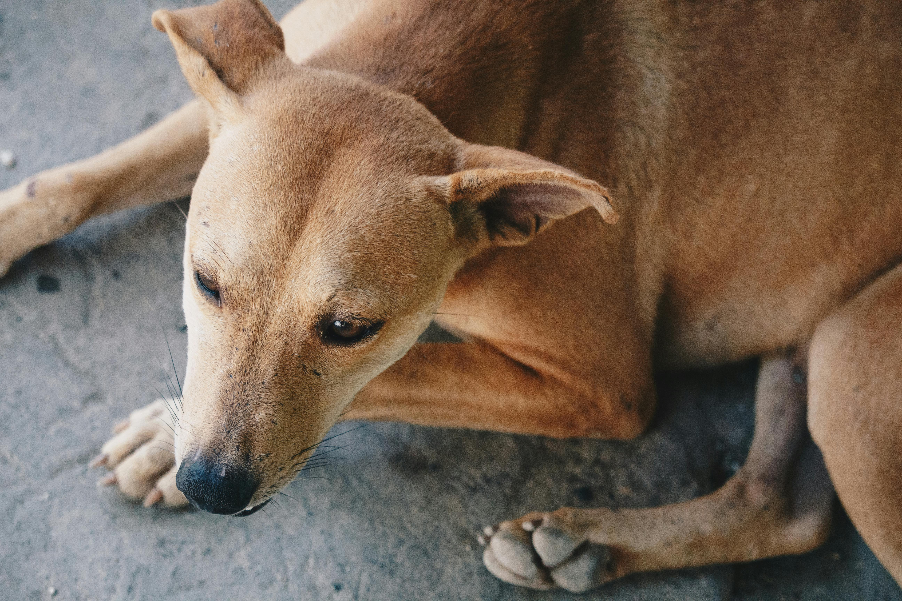

ADOPT
AN
ANGEL


THEY
ARE
WAITING
ARE
WAITING

WAGGING
THEIR
TALE
THEIR
TALE
TO
FIND
THEIR
FIND
THEIR

WAY
BACK
HOME!
BACK
HOME!
Introduction
Every year, millions of stray dogs struggle to survive on the streets, facing challenges such as hunger, disease, and harsh weather conditions. By adopting a stray dog, you’re not only giving a deserving animal a second chance but also reducing the number of homeless animals. Stray dogs are loving, intelligent, and incredibly loyal companions when given the opportunity.
Why Adopt a Stray Dog?
Save a Life Stray dogs often face bleak futures. Adoption provides them with safety, love, and a home. Reduce Stray Population By adopting, you’re helping address the issue of overpopulation and homelessness among dogs. Health Benefits Owning a dog can lower stress, increase physical activity, and improve mental health. Unmatched Loyalty Stray dogs are often incredibly grateful for being rescued, forming strong, lifelong bonds with their adopters.
Adoption Process
Meet the Dogs Browse through profiles or visit our shelter to meet the dogs available for adoption. Home Check & Interview Ensure your home environment is safe and suitable for the dog you wish to adopt. Complete Paperwork Fill out the necessary forms and agree to care and support your new companion. Welcome Home Take your dog home and start building a beautiful relationship!
About Little Paws
Little Paws is dedicated to rescuing and rehoming stray animals, providing them with the love and care they deserve. Join us in our mission to create a better future for these angels.
Contact Us
📍 Address: 123 Paw Street, Animal Town, PA 12345
📞 Phone: +91 (555) 123-4567
📧 Email: contact@littlepaws.org
Feel free to reach out to us for adoptions, donations, or general inquiries. Together, we can make a difference!